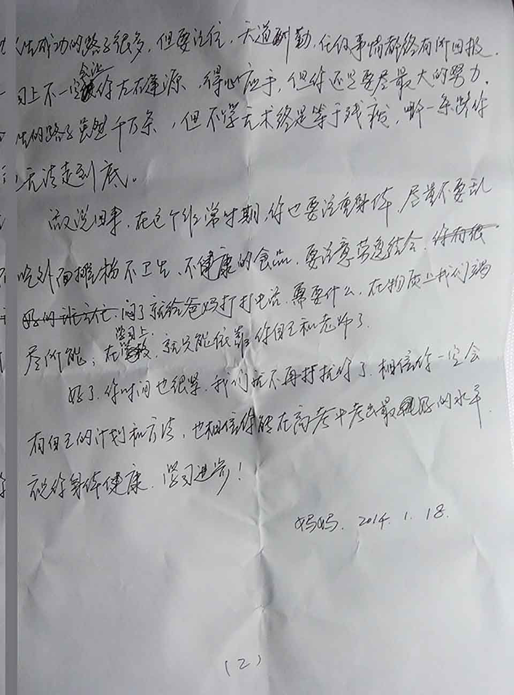

几个月没有写博文了，我果然还是不喜欢每天都在自己的个人空间写一大堆关于 0101 的长篇大论，只是喜欢用博客来记录自己的生活，在有感而发的时候写些什么，毕竟还有很多技术社区嘛o(^▽^)o
本来想在自己的博客写一个 2015 的总结和 2016 的计划，但是已经在其它社区发过新年计划了，同时又在日历卡写满了 2016 要做的事情，觉得重复写这些东西很乏然无味，所以打消了这个念头。
大前夜收拾行李返校的时候无意间翻出了两年前妈写给我的信（我此时此刻心中万般恨，真的是狗日的垃圾手机，第 N 次损坏我的照片了！！！好好的一封信只剩下半封了 T^T 我一定要换了这渣机！！！）：

想想人生真的很短暂，你昨日在家看护着的蒲公英，今天就已经飘向了远方。
回望曾经的岁月，欢笑过，痛哭过，有时真觉得时光匆匆，很多迫不及待想去做的事、想去闯的梦却迫于无奈任其随风飘去了。
尽管至今仍然不学无术，不过很庆幸我这一路来初心未变，依旧是那个懵懂的少年。这一路看到更多的是自己内心的成长，学会忍让和包容，学会爱与恨。我相信，有一颗够强大的心，走到何处都是无限春光。
路在脚下，越走越踏实。人在远方，越飘越远。青山影无踪，踏雪却有痕。永远记住曾经的笑与泪，感谢那些爱过恨过的人，感谢他们让我成长起来。同时要紧追时间的尾巴，不要让别人一直在等你，不要让今天的事一直推到明天，走好剩下的路，做最好的自己：）